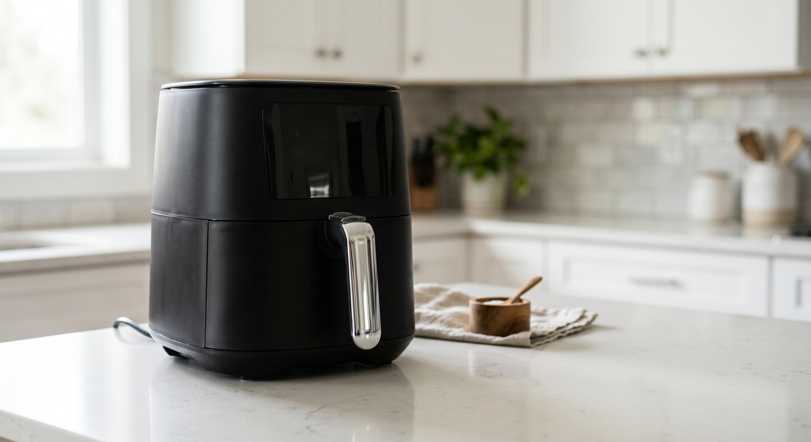
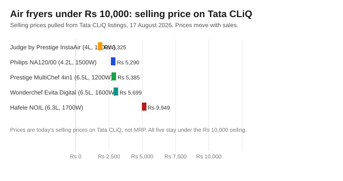

Best Air Fryer Under Rs 10,000 in India (2026): 5 Picks That Actually Earn Their Place
The short version
TL;DR: The Philips NA120/00 (Rs 5,290, 4.2L, 1500W) is the smartest buy under Rs 10,000: proven Rapid Air tech, a real 4.2-litre basket, and the widest service network in the country. Need a bigger basket for less? The Judge by Prestige InstaAir (Rs 3,325, 4L, 1200W) is the best value in this segment right now. Prices are today's Tata CLiQ selling prices, pulled 17 August 2026.Last updated: 2026-08-17. Prices verified against Tata CLiQ listings on this date; they move with sales.
Which air fryer under Rs 10,000 is actually worth buying?
Rs 10,000 covers nearly the whole air fryer market in India short of Ninja's big dual-zone machines. The real question is where your money lands: a proven 4-litre model at Rs 5,000, or a bigger 6-litre model at Rs 6,000-8,000. These five picks are all verified in stock on Tata CLiQ on 17 August 2026:
| Air fryer | Capacity | Power | Price (17 Aug 2026) | Best for |
|---|---|---|---|---|
| Judge by Prestige InstaAir | 4 L | 1200 W | Rs 3,325 | Budget value |
| Philips NA120/00 | 4.2 L | 1500 W | Rs 5,290 | Best trusted-brand pick |
| Prestige MultiChef 4in1 | 6.5 L | 1200 W | Rs 5,385 | Big family, small budget |
| Wonderchef Evita Digital | 6.5 L | 1600 W | Rs 5,699 | Big capacity plus presets |
| Hafele NOIL 6.3L | 6.3 L | 1700 W | Rs 9,949 | Maximum capacity under 10k |
Compare all air fryer prices on Tata CLiQ → (prices shift with sales; check on the day you buy)

Is the Philips NA120/00 the best air fryer under Rs 10,000?
The Philips NA120/00 is my top pick for most buyers, and the reason is boring: it is the model I can defend to someone else. Philips invented the air fryer category, its Rapid Air system is the most proven in the market, and the 4.2L / 1500W spec sits comfortably in the middle of this price band. At Rs 5,290 you are paying for engineering and service coverage, not gadgetry you will stop using after a month.
Is the Judge by Prestige InstaAir a good budget air fryer?
The Judge by Prestige InstaAir is the surprise of this list: a 4-litre digital air fryer (the listing's spec sheet rounds it to 4.2L) with 8 presets at Rs 3,325. Judge is Prestige's budget sub-brand, so you get the kitchen pedigree of one of India's oldest appliance brands without the premium price. For a first air fryer, a gift, or a small household, spending under Rs 3,500 to learn whether you will actually use the appliance is the smartest money move in this category.
Which air fryer under Rs 10,000 has the biggest capacity?
If capacity is the whole game, the Prestige MultiChef 4in1 (6.5L, Rs 5,385, MRP Rs 7,695) and the Wonderchef Evita Digital (6.5L, Rs 5,699, MRP Rs 10,000) fight it out. The MultiChef is a 4-in-1 (air fryer, oven, toaster, griller); the Evita brings 10 presets and a stronger 1600W element. Both fit a full chicken or a family tray of fries in one go, which a 4L model cannot.
Worth doing the maths on litres per rupee: the Judge and the MultiChef both land near 1.2L per Rs 1,000, the Evita is a bit behind, and the Hafele NOIL is the worst at roughly 0.6L per Rs 1,000 - useful only if the Hafele badge specifically matters to you.

Is the Hafele NOIL 6.3L worth Rs 9,949?
Hafele is a German kitchen fittings brand, and the Hafele NOIL 6.3L is their digital air fryer with 360-degree rapid air circulation, 8 preset menus and a 1700W element. At Rs 9,949 it is the priciest unit here, and the premium is hard to justify when the Prestige MultiChef does 6.5L for Rs 5,385. You are paying for the import-brand badge and Hafele-grade build quality. It is a real product and it will do the job; it is just not the value pick.
What should you check before buying an air fryer under Rs 10,000?
Skip the marketing and check five things before you buy:
- Capacity vs household size: 4L suits 1-3 people; 5-6.5L suits families of four or more.
- Wattage: 1200W handles small portions; 1500-1700W preheats faster and crisps bigger batches, at a small electricity cost.
- Presets vs manual control: presets are convenience shortcuts, not a quality signal.
- Basket and coating: dishwasher-safe and non-stick saves daily annoyance; the basket is the first part to wear out.
- Service network: the invisible spec. Philips and Prestige have service centres in small towns; smaller brands often do not.
Which air fryer under Rs 10,000 should you buy?
My final verdict in one line: the Philips NA120/00 at Rs 5,290 is the pick for most Indian households: proven technology, right-sized basket, and a service network that exists where you live. Budget tight or first fryer? The Judge by Prestige InstaAir at Rs 3,325 is the best value. Cooking for five or more? Step up to the 6.5-litre Prestige MultiChef 4in1 without blowing the budget.
Prices on Tata CLiQ fluctuate with sales, so treat the figures above as a snapshot from 17 August 2026 and confirm on the product page before checkout. Shopping via the links on this page also earns this site a small commission from Tata CLiQ at no extra cost to you.
Check today's air fryer prices on Tata CLiQ →
FAQ
Which is the best air fryer under Rs 10,000 in India?
The Philips NA120/00 at Rs 5,290 (Tata CLiQ, 17 August 2026) is the best overall: 4.2L, 1500W, Rapid Air tech, and Philips' service coverage. If you want the cheapest good option, the Judge by Prestige InstaAir at Rs 3,325 is the best value.
Is a 4L air fryer enough for a family of 4?
It is enough for side dishes and snacks, but tight for a full meal - a 4L basket fits a batch of fries or a single chicken breast, so a full dinner for four usually means two batches. Families of four or more should prefer 5-6.5L models like the Prestige MultiChef 4in1 (Rs 5,385) or Wonderchef Evita Digital (Rs 5,699).
What is the difference between a Rs 3,000 and an Rs 8,000 air fryer?
Mainly capacity, heating power, build quality and the service network. A cheaper unit like the Judge by Prestige InstaAir (Rs 3,325) is genuinely capable, but a pricier Philips NA120 (Rs 5,290) brings a stronger 1500W element, more proven air circulation, and service centres in more towns. Above Rs 8,000 you mainly pay for import-brand badges (like the Hafele NOIL at Rs 9,949).
Are air fryers expensive to run?
No. A 1500W air fryer running 20 minutes uses about 0.5 kWh - around Rs 4-8 at standard Indian tariffs, cheaper than a full-size oven and faster than a kadhai for snacks.
Do I need presets on an air fryer?
No. Presets are pre-programmed time and temperature combos that save a button press or two; most people override them within weeks. Capacity, even cooking and easy cleaning matter more.
Can I cook Indian food in an air fryer?
Yes - samosas, pakoras, roasted chana, paneer tikka and reheated parathas all work well. It will not replace a kadhai for deep frying, but it handles most crispy cravings with a fraction of the oil and none of the splatter.
Quick recap: best air fryer under Rs 10,000
- Philips NA120/00 (Rs 5,290) - best all-round pick: 4.2L, 1500W, proven Rapid Air tech.
- Judge by Prestige InstaAir (Rs 3,325) - best budget value: 4L, 8 presets.
- Prestige MultiChef 4in1 (Rs 5,385) - best big-capacity value: 6.5L for a family.
- Wonderchef Evita Digital (Rs 5,699) - 6.5L, 10 presets, 1600W element.
- Hafele NOIL 6.3L (Rs 9,949) - max capacity under Rs 10,000, if the badge matters.
Prices are Tata CLiQ selling prices as of 17 August 2026, not MRP. Verify before checkout - sale prices change constantly.